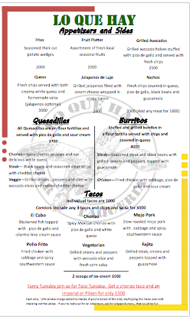

Welcome to our bar and taqueria located directly on the beach to enjoy breakfast, lunch or dinner in company of smooth sounds of the ocean. Pass the time in the shade of trees and watch the surfers and all the beach activity or step into the shelter of the rancho where there is a wide-screen TV for sports events. You find here large selection of pizzas, taco fillings (fish, chicken, beef or pork), and mains like blackened fish, slow roasted pork and beef fajitas, grilled avocados stuffed with "pico de gallo", jalapeno peppers, mojo pork and much more. We also offer a nice selection of better wines and beers.
Don't forget to check out our Taco Tuesdays for bargain plates with a beer.
|
Menu (.pdf)  |
Breakfast Menu (.pdf) |